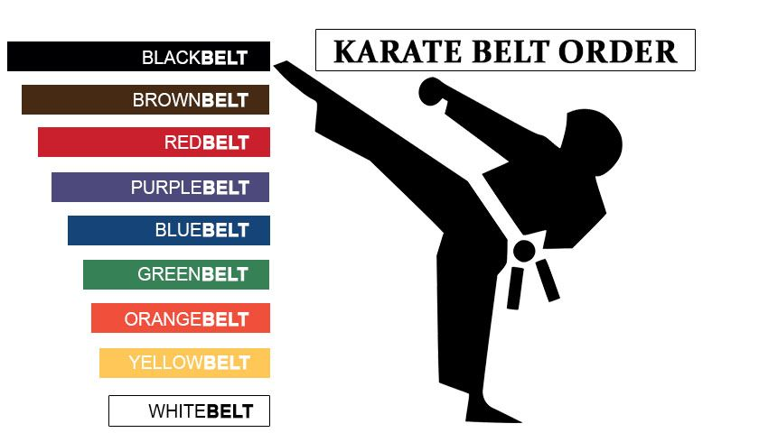

Karate provides numerous benefits for children, including developing physical fitness, boosting confidence, fostering
self-discipline, enhancing coordination, teaching self-defense skills, promoting respect, and improving focus and
concentration, all while providing a structured environment for learning valuable life skills.
Key benefits of karate for kids:
Physical Development:
Strength and Flexibility: Karate training involves a variety of movements that build overall muscle strength and
flexibility throughout the body.
Coordination and Agility: Practicing different stances and techniques improves hand-eye coordination and agility.
Cardiovascular Health: The active nature of karate classes helps children develop healthy heart function and endurance.
Mental Development:
Focus and Concentration: Karate emphasizes the importance of staying focused during practice, which can improve a
child's ability to concentrate in other areas of life.
Self-Discipline: The structured nature of karate classes teaches children the value of following instructions and
persevering through challenges.
Confidence Building: Mastering new skills in karate can significantly boost a child's self-esteem and confidence.
Social Skills:
Respect for Others: Karate classes often emphasize respect for instructors, peers, and the martial arts tradition
itself.
Teamwork: Training in a group environment can foster cooperation and teamwork skills.
Leadership Potential: As children progress through belt levels, they may develop leadership qualities by guiding younger
students.
Self-Defense:
Basic Defense Techniques: Learning basic self-defense moves can provide children with the ability to protect themselves
in potentially dangerous situations.
Situational Awareness: Karate training encourages children to be aware of their surroundings and potential threats.
